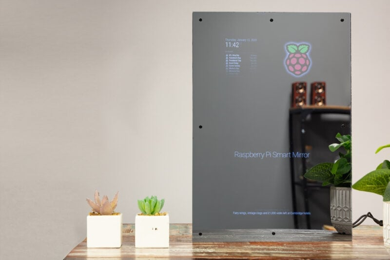

Q1 2027 · PROGRAMACIÓN Y ELECTRÓNICA
Smart Mirror con Raspberry Pi
Un espejo inteligente hecho con Raspberry Pi 5. La idea es reunir en un mismo sitio información útil, control por voz y detección de movimiento.
Ver proyecto
Linux
Raspberry Pi
Python
HTML
CSS
JavaScript